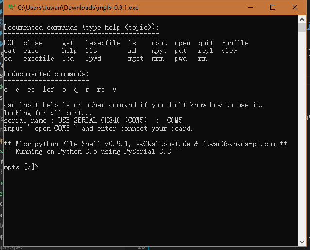
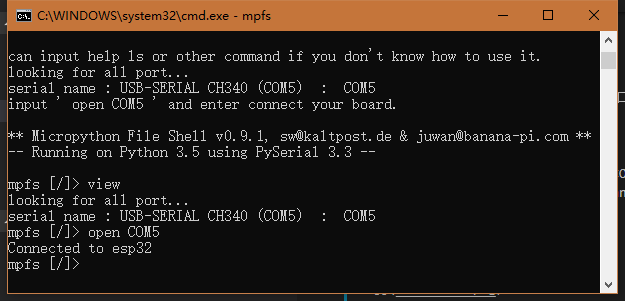
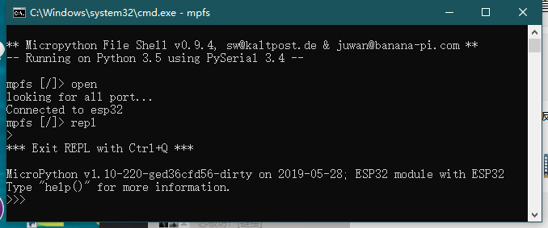
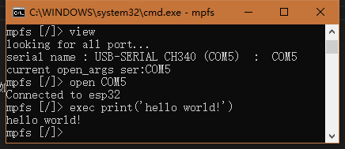
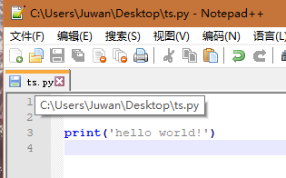
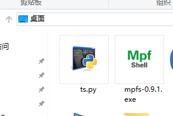
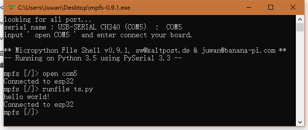
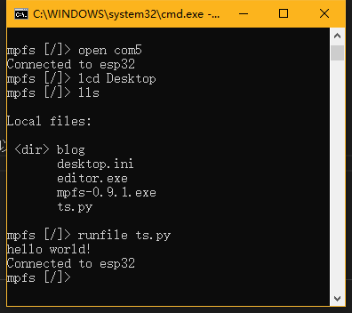

中文
中文一款 Shell 型 MicroPython 文件资源管理器⛺


这个 mpfshell 的 lite 版是开发十分激进的版本，稳定版请参见 mpfshell 。
特点：
体积迷你，功能齐全的 MicroPython 管理工具，如：put\get\cat\rm\execfile 等等。
修复 Windows 大量使用问题，路径、乱码等等，但还是存在一些问题在陆续解决。
Windows 下绿色单文件，开箱即用，也可使用 Python 跨平台运行。
系统要求
- Python 3.5.4 +
- requirements.txt
使用方法
1. 到 releases 下载 mpfs.exe。
寻找你所用的系统版本并下载，如果下载很慢，可以用微云地址，下载后双击运行它。

2. 使用 PIP 安装
使用 Python 的 PIP 工具下载并安装，在控制台中输入pip install mpfshell-lite，然后输入 mpfs 即可运行。
pip install mpfshell-lite
mpfs

连接你的硬件
连接你的硬件，此时会出现当前硬件的端口号。
looking for all port...
serial name : USB-SERIAL CH340 (COM5) : COM5
input ' open COM5 ' and enter connect your board.
输入如图的 'open COM5' 即可连接。

可以看到 Connected to esp32 已经连接了。
进入 REPL 模式
mpfs [/]> open
looking for all port...
Connected to esp32
mpfs [/]> repl
>
*** Exit REPL with Ctrl+Q ***
MicroPython v1.10-220-ged36cfd56-dirty on 2019-05-28; ESP32 module with ESP32
Type "help()" for more information.
>>>

运行 micropython 代码。
1.直接运行代码
mpfs [/]> view
looking for all port...
serial name : USB-SERIAL CH340 (COM5) : COM5
current open_args ser:COM5
mpfs [/]> open COM5
Connected to esp32
mpfs [/]> exec print('hello world!')
hello world!
mpfs [/]>

2.运行代码文件
在 桌面 准备一个 Python 代码文件（.py）
print('hello world!')

- 使用 exe 版本

将 exe 与 .py 放在一起，按以下命令操作。
looking for all port...
serial name : USB-SERIAL CH340 (COM5) : COM5
input ' open COM5 ' and enter connect your board.
** Micropython File Shell v0.9.1, sw@kaltpost.de & juwan@banana-pi.com **
-- Running on Python 3.5 using PySerial 3.3 --
mpfs [/]> open com5
Connected to esp32
mpfs [/]> runfile ts.py
hello world!
Connected to esp32
mpfs [/]>

- 使用 PIP 版本
在 CMD 的控制台模式下，需要使用以下命令，先定位文件夹路径（lcd），再运行文件（runfile）。
可以使用 lcd 定位到运行文件的路径下，如 lcd C:/Users/Juwan/Desktop （注意是 / 不是 \，这让人很烦）
mpfs [/]> open com5
Connected to esp32
mpfs [/]> lcd Desktop
mpfs [/]> lls
Local files:
<dir> blog
desktop.ini
editor.exe
mpfs-0.9.1.exe
ts.py
mpfs [/]> runfile ts.py
hello world!
Connected to esp32
mpfs [/]>

使用帮助
在程序中，你也可以通过 help + 命令 的方式获取对应的命令说明或参数等细节。

例如：help cd， 返回的是 cd <TARGET DIR> Change current remote directory to given target.。
可以得知 它是用来改变 目标板子里的当前文件目录起点，相当于设置板子的文件夹默认路径在什么位置。
常见错误
连接硬件的时候，要特别注意死循环，如果在连接过程中板子存在没有任何延时的死循环，则会影响软件连接板子的成功率，尤其是没有延时的 main.py 死循环，这会导致上电后将无法连接硬件，你可以在复位连接后 rm main.py，这点需要注意，不过，有线串口的连接不成功则会进行板子的复位（ Mac 例外）。
详解工具
0. 支持的系统版本
| 系统类型 | 系统版本 | 运行情况 | 注意事项 |
|---|---|---|---|
| Windows | WIN7 - WIN10 | 正常 | 原生 CMD 不支持 TAB |
| Linux | Lubuntu - Ubuntu | 正常 | 原生 Shell 支持 TAB |
| Mac | Darwin | 正常 | 与 Unix 均一致 |
1. 重要的功能操作
| 操作方法 | 不同系统工具支持情况 | 运行效果 | 注意事项 |
|---|---|---|---|
| 输入一些内容后通过 TAB 键补全 | 仅 shell、repl、powershell 支持。 | 如果想要打 import 只需要 输入 i 后在按下 TAB 键就可以自动补全了，比如 linux 下，输入 ttyUSB0，只需要 i + TAB 键就可以了。 | 前提是，该命令被系统提前输入过，否则它没办法补全，它只能补全历史输入的信息。 |
| 左键复制选取，右键粘贴选取 | 仅 Windows的系统支持。 | 开启 CMD控制台 程序的属性里的 快速编辑 功能，可以让程序支持鼠标 点击暂停程序后点左键拖动复制文本内容。 | 如果选取的是多行代码或命令，不代表可以直接使用，所以一般都是选取一行的。 |
| 上下左右按键及退格 | 均支持 | 上下按键可以切换读取历史输入过的命令，左右方向键以及程序退格操作可以对自己输入过的内容进行修改。 | 仅针对windows做了修复。 |
2. 所有命令的用法
命令中的括号为简写，方便使用。
| 命令类型 | 使用方法 | 运行结果 | 注意事项 |
|---|---|---|---|
| open (o) | 打开当前设备。格式有：有线串口 open com3，无线有 ws:192.168.10.114,1234 |
连接成功后返回 Connected to esp32 |
控制板子前，需要先打开连接。括号为简写。 |
| close | 关闭当前设备。 | ||
| quit (q) | 输入 | 退出程序 | |
| EOF | 输入 | 退出程序 | 无 |
| cat (c) | 输入 文件名，例如 cat boot.py |
将板子的指定文件内容打印出来，以便快速查看。 | 无 |
| put | 把当前目录下的文件推送到板子，例如put boot.py |
无 | 失败会返回错误信息 |
| get | 获取板子当前目录下的文件，例如get boot.py |
在程序运行的目录（lpwd）下多了一个 boot.py 文件 | |
| mput | 与 put 相对，以板子为主，对程序的目录操作。 | ||
| mget | 与 get 相对，以板子为主，对程序的目录操作。 | ||
| repl (e) | 进入 python 的 repl 控制接口 | 可以直接执行python代码。 | |
| exec (e) | 输入 Python 代码，例如exec print('hello') |
返回print('hello')的运行结果 hello | 只能执行一行 python 代码。括号为简写。 |
| execfile (ef) | 执行板子中存在的python文件，例如execfile main.py |
执行 main.py 的效果 | 括号为简写。 |
| lexecfile (lef) | 执行程序下存在的python文件，例如lexecfile main.py |
执行 main.py 的效果 | 括号为简写，与 runfile 不同的是会进入repl模式，所以支持input操作。 |
| runfile (rf) | 结合了 put 和 execfile 命令 | 括号为简写。 | |
| cd | 输入 指定板子里的目录，例如 cd / 或 cd D:/Users |
修改程序访问板子的所处目录 | 以 / 分隔的linux路径。 |
| md | 输入 目录名称 | 在板子上新建一个目录 | 无 |
| lcd | 输入 指定现在程序里的目录，例如 cd / |
修改程序访问板子的所处目录 | 以 / 分隔的linux路径。 |
| pwd | 输入pwd |
返回当前板子所处的目录 | 无 |
| lpwd | 输入 lpwd |
返回当前程序所处的目录 | 无 |
| mpyc | 输入 当前目录下的 python 文件，例如 mpyc main.py |
把 python 代码 pyc 化静态编译代码处理，生成 main.pyc | 需要系统里有 mpy-cross 命令 |
| mrm | 输入指定的目录或文件名 rm 目录或文件名 |
移除系统里的该目录或文件名 | |
| rm | 输入指定的目录或文件名 rm 目录或文件名 |
移除板子里的该目录或文件名 | |
| ls | 输入ls / |
查看 板子 当前目录下的所有文件 | |
| lls | 输入 lls / |
查看 程序 当前目录下的所有文件 | |
| view | 输入 view |
查看 本机 可能的串口，和当前的 open 配置 | |
| help | 查看命令的帮助，例如：help lls |
pyinstaller
- create mpfs.exe
pyinstaller -F mpfs -i logo.ico
uplaod pypi
python setup.py sdist build
# pip install twine
twine upload dist/* --verbose